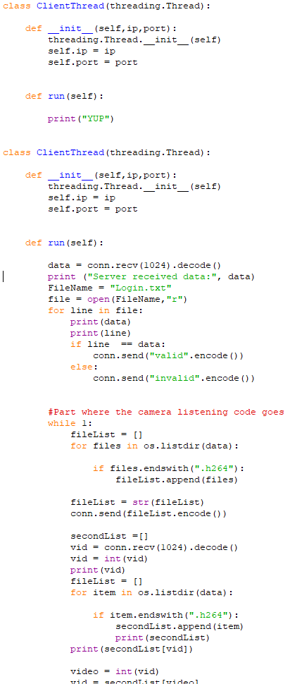

Smart Home Security System
| About The Program |
|---|
 This program was written in a team for a university assignment. I was the head of the development team and subsequently I had to make sure all the aspects of the program were functional before the submission date. It’s a shame about the ui of this program because to develop the program took quite a lot of effort which I feel is somewhat tarnished by the rather basic UI. However, this program took a few days to write and debug, and was actually quite fun to program, if I were to restart this program I would perhaps use java instead of python as I was learning java at the time and I felt more comfortable with the language, plus the way classes are programmed in python is a little bit janky and no where near as elegant as java. I also feel it might have been easier for the design team to create a nice-looking UI if I had used java because there are more drawing tools for creating a UI with java integration rather than using python. This program was written in a team for a university assignment. I was the head of the development team and subsequently I had to make sure all the aspects of the program were functional before the submission date. It’s a shame about the ui of this program because to develop the program took quite a lot of effort which I feel is somewhat tarnished by the rather basic UI. However, this program took a few days to write and debug, and was actually quite fun to program, if I were to restart this program I would perhaps use java instead of python as I was learning java at the time and I felt more comfortable with the language, plus the way classes are programmed in python is a little bit janky and no where near as elegant as java. I also feel it might have been easier for the design team to create a nice-looking UI if I had used java because there are more drawing tools for creating a UI with java integration rather than using python. |
| How it Works |
| The Client |
The Client This program is the main part of the system, the client logs into a secure server with an encrypted login, this login then dictates where the server looks for the security footage, this means that the videos are saved in the correct location using the client’s login as a filename. Once the user logs in they see a screen with a list of their footage, the user then selects which footage they wish to view and download it to their machine. The server sends the video in a h264 format to save some time. The client can then view the video from their machine, I am planning on expanding this concept for my final year project by adding video processing and checking if the detected movement is a person, animal, car, etc. The Camera This is all being run on a raspberry pi and is using the raspberry pi camera module and a passive infrared sensor to check for movement. Once the motion is detected the camera begins recording and then stops when the movement is no longer detected. This is then saved locally and sent to the server which saved the incoming file to the specified user’s folder. The camera then goes back into the alert mode where it is waiting for movement to record, if the user selects the view live feed option, the camera starts another script which then broadcasts the camera feed to a webpage for the client to view, the original plan was to send the feed to the clients application but because of time constraints the easiest way to do it was to show on a webpage. |
| Source Code Download |
|
Server_for_ppm (includes Write up and demo video).zip
|